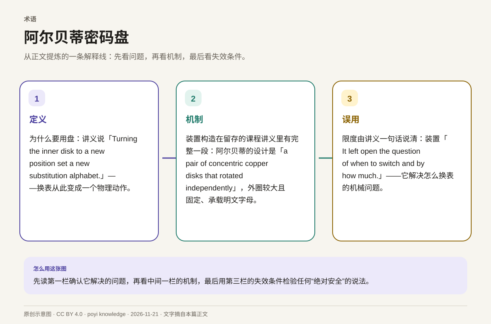

原理与机制
术语：阿尔贝蒂密码盘（Alberti Cipher Disk）。装置构造在留存的课程讲义里有完整一段：阿尔贝蒂的设计是「a pair of concentric copper disks that rotated independently」，外圈较大且固定、承载明文字母，内圈较小且可动、承载一张打乱过的密文字母表；把内圈转到新位置就换一张替换表。手册第 7 章 §7.8 的注记对同一装置只给两句概述，因此该条目的机制描述以讲义为准。

为什么重要
为什么要用盘：讲义说「Turning the inner disk to a new position set a new substitution alphabet.」——换表从此变成一个物理动作，双方只需约定起始对齐并在需要时转动内盘。同一节记下它的效果：一个明文字母在不同位置可以落到不同密文字母上，而这正是多表设想要买的东西。
应用与实例
可核证的操作口径都在讲义里：双方「The sender and receiver agreed on a starting alignment, such as outer A against inner G」，先用这一对齐加密若干词，再转内盘换新表，并在电文里插入一个记号字母示意换表；讲义同时写明双方必须持有完全相同的盘，而阿尔贝蒂建议按不规则的间隔换表，好让换表点更难被看出。同一节还把该装置归到他所著的密码论文书里。复算记在 calculations 中：以留存件明载的两处对齐（外 A 对内 G、外 R 对内 M，即明文 R 得密文 M）构造盘模型，模型必须复现这两个映射，且内盘转动即换一张替换表、转过一整圈复原原表——后两项是旋转模型自身的性质，不是对留存件的测量，记录中已如此标注；留存件实际印出的字母 R 在三个对齐下得到三个不同密文字母（M、Z、Q），对应留存件印出的 "One plaintext symbol could now map to many ciphertext symbols depending on its position in the message"；规则切换与不规则切换在同一 24 字母块上的周期一致性分别实测为 1.000 与 0.125，正是该文献所说改变应对齐时机的作用；最后验证双方须持同盘方可复原，异盘不能。
边界与攻击面
限度由讲义一句话说清：装置「It left open the question of when to switch and by how much.」——它解决怎么换表的机械问题，把何时换、换多少留成一条必须由双方约定的规则；同一节接着说，若这条规则产生可预测的对齐序列，就等于给分析者留下可找的模式。至于两次换表之间，手册 §7.8 的说法是对齐本身定义的是简单替换，单字母频率照旧成立。
历史与背景
断代句在手册 §7.8 的注记开头：「Polyalphabetic ciphers were invented circa 1467 by the Florentine architect Alberti」，随后两句给出盘的结构与写几词后转动的规则。年份带 circa，属手册的史述口径；讲义一侧对同一件事写的是 1467 年由佛罗伦萨建筑师阿尔贝蒂设计，两处给出的年份一致，因此本行时代落在 1450–1600 的文艺复兴窗口，人物标签按同一句写为建筑师阿尔贝蒂。
逐步示例与核验
定义检查模型
上位概念 → 区别特征 → 正例 → 反例 → 易混边界。正例必须落在外延内；反例必须刚好跨过边界；同义词不能代替定义。
参考出处
- Wikipedia search entry for 阿尔贝蒂密码盘. https://zh.wikipedia.org/w/index.php?search=%E9%98%BF%E5%B0%94%E8%B4%9D%E8%92%82%E5%AF%86%E7%A0%81%E7%9B%98
- RFC 4949: Internet Security Glossary, Version 2. https://www.rfc-editor.org/rfc/rfc4949